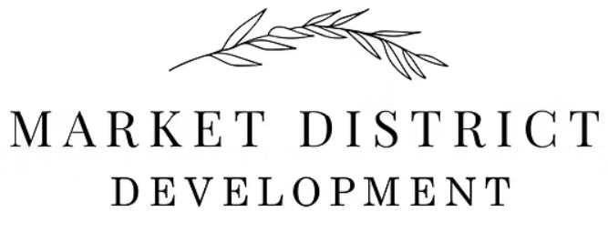

Evidence stays attached
Response content stays connected to the RFP, prior submissions, expert input, and approved firm sources. Reviewers can trace the support instead of trusting a clean paragraph on appearance alone.
"Matrix has 38 rows. Three SMEs to answer them. Each one's calendar is buried with client work. We'll submit with gaps."
"Our strongest past-performance project for this RFP was in Maria's head. She wasn't on the response team. We submitted without it."
"We bid anyway, even though the firm had not done a project this size in five years. Forty hours later, we lost. The warning signs were there from the start."

Every proposal runs through these five stages. Propagent makes each one faster, sharper, and defensible.
Issuer intent separated from raw requirements. What matters, what is being asked, what the submission is really trying to evaluate.
Compare the opportunity against company expertise, available proof points, known differentiators, and missing information.
Fit, competitiveness, requirements, risk, readiness. Deciding what not to pursue is almost as important as submitting a strong response.
Confidence Routing flags sections that lack enough support and sends each one to the right person as a scoped question — not a full packet for midnight review.
Final response in the firm's voice: grounded, cohesive, and specific to the issuer and the project.
Propagent shows which sections are already supported and which still need judgment. Confidence Routing sends only the unanswered issue, with its context and deadline, to the right person.
Issuer expects continuous operations during construction. Confirm the after-hours phasing premium for a 4-story occupied retrofit at this scale, or flag if our last similar number is stale. 1–2 sentences plus the number.
Ranges drawn from AEC proposal benchmarks and peer-category outcomes. Per-customer results vary with annual proposal volume, SME availability, and prior knowledge depth.
Most solutions cover one or two phases. Propagent covers the whole proposal lifecycle.
The evidence stays attached to the answer. Reviewers see what the system used, where support is strong, and where a decision still needs a person.
Response content stays connected to the RFP, prior submissions, expert input, and approved firm sources. Reviewers can trace the support instead of trusting a clean paragraph on appearance alone.
Statements about the firm's capabilities are checked against accepted, defensible references, not pulled from boilerplate that's years out of date.
When two parts of the response disagree on staffing, schedule, or fee assumptions, the contradiction is surfaced before the submission leaves the firm.
Where the firm is thin or missing support, the gap is shown. The team chooses how to position, route an expert question, or hold the claim.
Reviewers can see what the system is doing, what sources were used, and where human judgment is still needed. They see what's there — they don't have to trust it on faith.
Propagent preserves the source-backed content, expert input, edits, and decisions your team approves. Each pursuit starts with more of your firm's best work already available.
Propagent starts with your source documents, prior work, approved content, and team decisions.
Ready for your first responseYour team sees which experience consistently wins, where responses fall short, and how approved firm language performs.
Prior proposal patterns become visibleQualification, evidence, expert routing, and review begin with the firm's accumulated, approved experience.
Each approved response strengthens the nextYou don't need every proposal. You need a clear read on which work is worth chasing before the team commits the hours and the SME calendar.
You need to pursue better-fit work and stop relying on instinct or rushed internal discussion. Bid-scout, qualification, and competitive context, surfaced before the deadline crunch starts.
You need answer coordination that doesn't turn into a midnight committee scramble. Scoped questions to the right SME in their channel, not packet review threads.
You'd rather get a scoped, bounded question (with what the system already has and what it needs from you) than another "please review the packet" Slack ping at 10pm.
Each tier covers the full proposal workflow, evidence-backed drafting, and clear reviewer controls. Tiers differ by annual proposal volume, not seat counts.
See how Propagent handles requirements, fit, evidence, SME input, review, and approval across the full response.
Why the next generation manages the response process instead of merely generating text.
Control the requirementsTurn the matrix into a living control record for requirements, owners, evidence, and status.
Trust the draftBuild persuasive content from approved evidence while unsupported claims and conflicts stay visible.
Reuse approved knowledgePreserve approved pursuit knowledge so the next team starts from the firm's real record.
Make the decision visibleMake fit, risk, readiness, evidence, and the human decision traceable—not hidden in one number.
Protect expert timeTurn broad chases into focused questions with the requirement, context, and deadline already attached.
Propagent is the next generation of proposal and response management for AEC firms. It is a system-led workflow that connects RFP requirements to firm capabilities and proof, coordinates the response, and turns that evidence into a polished case to win while people retain expertise, judgment, and final approval.
Propagent analyzes the RFP, compares requirements with the firm's capabilities and proof, exposes gaps, coordinates focused expert input, matures the content, and checks the response through final approval. The system carries the process; people contribute expertise, apply strategic judgment, and approve the work.
Previous-generation response tools assist at isolated steps while the proposal team still searches, prompts, coordinates, reconciles, and polishes. Propagent is built around a system-led workflow that carries the response from requirements analysis through quality review, with people responsible for expertise, judgment, and approval.
$1,000/month for up to 25 responses a year, $2,000/month for up to 50, $5,000/month for up to 200, and custom Enterprise pricing above that. Every tier includes the full workflow; tiers are based on annual response volume, not seat counts.
A response is any RFP, RFQ, RFI, or DDQ you run through Propagent — including opportunities you no-bid after Go / No-Go. We track usage on a three-month rolling average: if you're on pace to pass your tier's ceiling, we tell you early — and when you reach it, upgrading is your call. Billing never increases automatically.
Architecture, engineering, and construction firms — and every role on the response team: principals, BD and capture leads, marketing and proposal managers, and pre-con SMEs.
Propagent checks response content against the available RFP and firm sources, keeps the supporting evidence visible, flags unsupported claims and gaps, and surfaces contradictions for review. A person remains responsible for strategic judgment and final approval.
Yes. Upload an RFP or a past response at the free RFP Grader for a graded report by email. Or book a 60-minute Propagent demo and bring a live opportunity for a pursuit-specific walkthrough.
60 minutes. Bring a real opportunity. We'll work through intake, gap analysis, Go / No-Go, answer coordination, and response maturity so you can see where the response gets sharper, faster, and more specific.
Direct link: propagent.ai/60min-meeting · Prefer email? daniel@propagent.ai